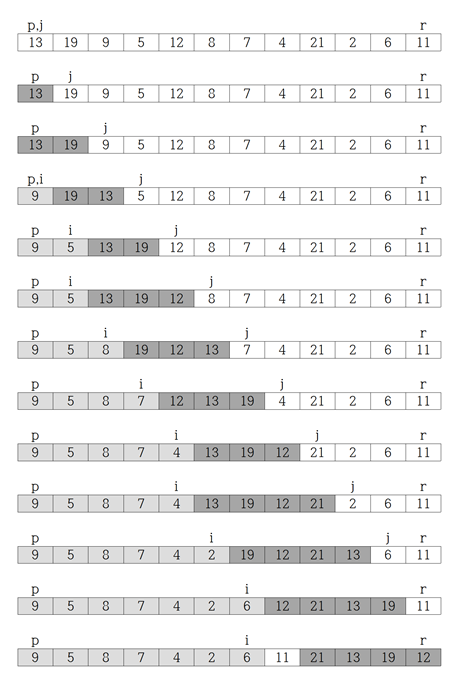

Summary
QUICKSORT(A,p,r)
if p < r
q = PARTITION(A,p,r)
QUICKSORT(A,p,q-1)
QUICKSORT(A,q+1,r)
// A 배열을 정렬하기 위하여, 첫 호출은 QUICKSORT(A,1,A.length) 이어야 한다.
PARTITION(A,p,r)
x = A[r]
i = p-1
for j = p to r-1
if A[j] ≤ x
i = i+1
exchange A[i] with A[j]
exchange A[i+1] with A[r]
return i+1
Exercises
7.1-1
Using Figure 7.1 as a model, illustrate the operation of PARTITION on the array A = <13,19,9,5,12,8,7,4,21,2,6,11>.

7.1-2
What value of q does PARTITION return when all elements in the array A[p..r] have the same value? Modify PARTITION so that q = ⌊(p+r) / 2⌋ when all elements in the array A[p..r] have the same value.
⇒ q = r
§수정된 코드
PARTITION(A,p,r)
x = A[r]
i = p-1
k = 0
for j = p to r-1
if A[j] ≤ x
if A[j] == x
k = k+1
i = i+1
exchange A[i] with A[j]
exchange A[i] with A[r]
return i - k/2
7.1-3
Give a brief argument that the running time of PARTITION on a subarray of size n is Θ(n).
⇒ worst case인 경우, for문이 1부터 r번 회전하면서 if문을 검사하므로 실행시간은 Θ(n) 이다.
7.1-4
How would you modify QUICKSORT to sort into nonincreasing order?
⇒ PARTITION 알고리즘 4줄에 있는 if A[j] ≤ x 조건식을 ≥ 로 바꾼다.